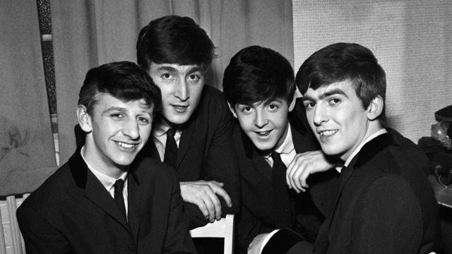
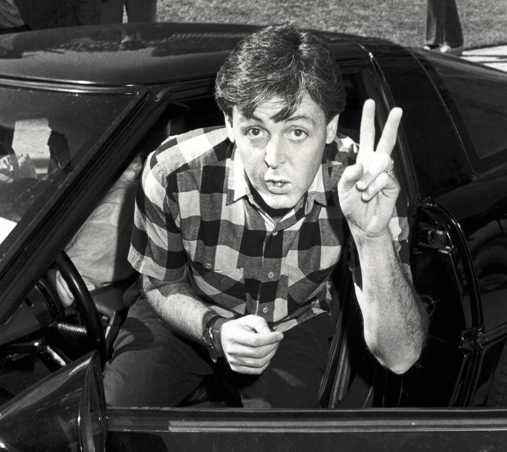
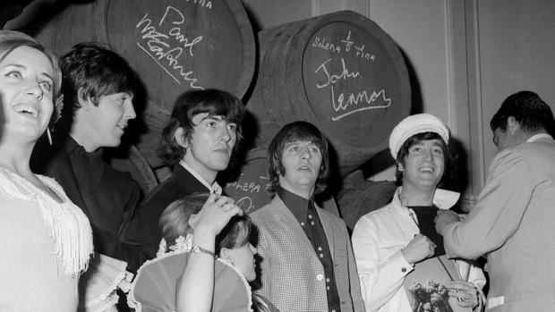

Los inicios de The Beatles
The Beatles fue una banda de pop/rock inglesa activa durante la década de 1960, y reconocida como la más exitosa comercialmente y la más famosa en la historia de la música popular.12345 Formada en Liverpool, estuvo constituida desde 1962 por John Lennon (guitarra rítmica, vocalista), Paul McCartney (bajo, vocalista), George Harrison (guitarra solista, vocalista) y Ringo Starr (batería, vocalista). Enraizada en el skiffle y el rock and roll de los años 1950, la banda trabajó más tarde con distintos géneros musicales, que iban desde las baladas pop hasta el rock psicodélico, incorporando a menudo elementos clásicos, entre otros, de forma innovadora en sus canciones. La naturaleza de su enorme popularidad, que había emergido primeramente con la moda de la «Beatlemanía», se transformó al tiempo que sus composiciones se volvieron más sofisticadas. Llegaron a ser percibidos como la encarnación de los ideales progresistas, extendiendo su influencia en las revoluciones sociales y culturales de la década de 1960.
Las mejores frases de la primera biografía oficial de Paul McCartney
Hasta 2013, Paul McCartney nunca había dado permiso para que alguien contara su vida. Y curiosamente escogió a Philip Norman, un escritor y periodista, biógrafo de John Lennon, al que hasta ese momento había considerado como un enemigo implacable. El 'beatle' más reservado y celoso de su intimidad accedía, al fin, a que alguien pusiera por escrito sus vivencias. Esta versión oficial es la que recoge el libro Paul McCartney. La biografía, que ahora publica en España la editorial Malpaso.En este relato de vocación enciclopédica aparecen todos los momentos, artísticos y personales, que han convertido a Paul en un mito de la historia de la música pop. Un recorrido que arranca en un barrio obrero de Liverpool y que tiene paradas en sus distintas parejas, su relación con las drogas, su intimidad con John Lennon o su rechazo del papel de Yoko Ono como quinto miembro (no oficial) de los Beatles. Estas son algunas de las palabras que Norman le dedica a Sir Paul en su libro.
Ringo Starr cierra el círculo de la Beatlemania en España
Durante su última actuación en Barcelona, allá por 2003, Paul McCartney quiso rendir homenaje a su exsocio John Lennon y emparedó la sentida «Here Today», una suerte de «Wish You Were Here» con menos músculo nostálgico, entre dos perlas del calibre de «The Fool On The Hill» y «Something». El público, todo suspiros y codazos de complicidad, se animó hasta tal punto que en cuanto se hizo el silencio empezó a corear no el nombre de Lennon, sino el del batería que les cubría a ambos las espaldas durante los días de vino y rosas de la banda británica. «¿Ringo? ¡Ringo está bien!», bromeó entonces McCartney.Y, en efecto, Ringo estaba bien.
Tanto es así que ese mismo año acababa de publicar su decimosegundo álbum de estudio, un «Ringo Rama» plagado de colaboradores ilustres como Eric Clapton, Van Dyke Parks, Willie Nelson y David Gilmour, y ahora, casi tres lustros después, se prepara para descorchar en España «Give Me Love», su último trabajo de estudio. Una noticia que no tendría más trascendencia si no fuese porque, además de suponer su debut en tierras españolas, los conciertos que ofrecerá Ringo Starr en Barcelona, Madrid, Bilbao y La Coruña (para los que hoy se ponen a la venta las entradas) vienen a cerrar ese círculo de Beatlemania desatada que se abrió el 1 de julio de 1965, cuando los fab four aterrizaron en Barajas dispuestos a ponerse España por montera.